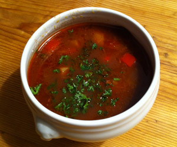

Gulasch
6 von 6300 Grad Rindsragout in kleine Würfel schneiden. Zwei Zwiebeln schälen, halbieren und in feine Streifen schneiden. Zwei Knoblauchzehen schälen und in Scheibchen schneiden. In einer grossen Pfanne etwas Butter schmelzen. Die Zwiebeln und den Knoblauch beifügen und unter häufigem Wenden im eigenen Saft etwa 15 Minuten hellgelb dünsten. 1 EL Paprikapulver über die Zwiebeln stäuben und alles gut mischen. Dann die Rindfleischwürfelchen beifügen und alles unter häufigem Rühren nochmals 10 Minuten dünsten. Erst jetzt die Zutaten in der Pfanne mit Salz und Pfeffer würzen. Dann 1.5 Rotwein, 6 DL Bouillon sowie eine Büchse Pelatitomaten beifügen und die Suppe aufkochen. Die Lorbeerblätter mit den Nelken bestecken und dazugeben. Etwas weiche Butter und etwas Mehl mit einer Gabel verkneten und in die leicht kochende Suppe rühren. Diese zugedeckt auf kleinem Feuer ca. 6075 Minuten kochen lassen. Inzwischen zwei Kartoffeln schälen und in kleine Würfelchen schneiden. Eine halbe Peperoni entkernen und ebenfalls klein würfeln. Kartoffeln und Peperoni etwa ½ Stunde vor Ende der Kochzeit beifügen und weich kochen. Die Suppe mit Salz sowie Pfeffer abschmecken. Etwas Petersilie fein hacken und über den Teller geben. Mit etwas Crème fraîche servieren.
